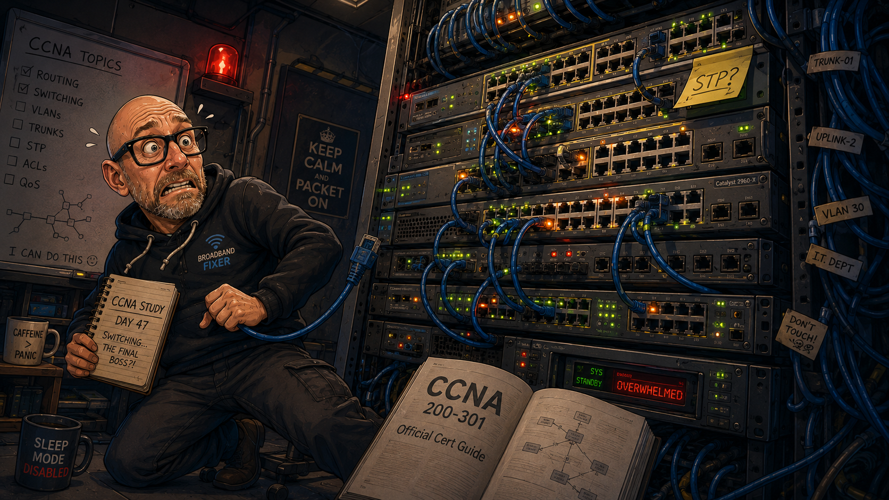
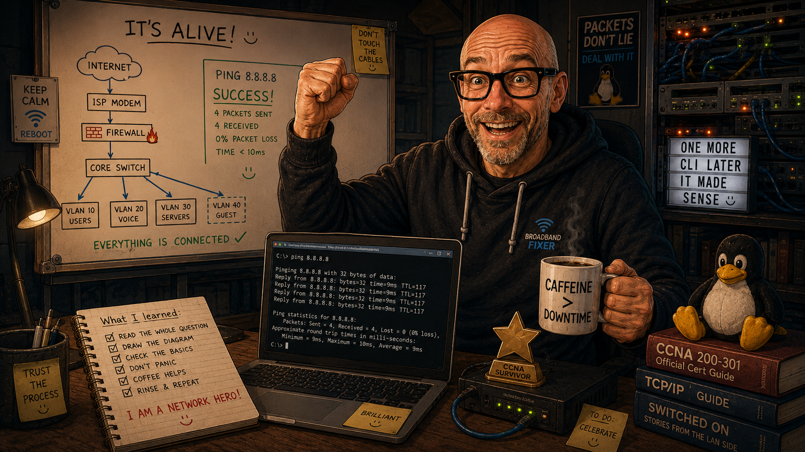

This journal began as a record of learning the basics of Cisco IOS. It has gradually become something more useful: a record of how my approach to networking, troubleshooting and verification has changed as the labs have become larger and more realistic.
The portfolio now extends well beyond introductory switch configuration. I have worked through VLANs and trunking, inter-VLAN routing, Spanning Tree, EtherChannel, static and dynamic routing, NAT, OSPF, HSRP, IPv6, ACLs, Layer 2 security and a growing range of operational services including CDP/LLDP, DNS, DHCP, NTP, SSH, SNMP and Syslog.
MAY 2026 · FOUNDATIONS
Start of the journey
I began building this portfolio to reinforce networking theory through practical configuration and troubleshooting rather than treating the CCNA as a purely academic exercise.
My initial goals were deliberately simple:
- become comfortable navigating Cisco IOS
- understand how switches and routers behave rather than just memorising commands
- build confidence configuring and verifying interfaces
- develop a repeatable troubleshooting process
- document what went wrong as carefully as what went right
At this stage even relatively small tasks — moving between EXEC modes,
assigning addresses, saving configuration and remembering
no shutdown — demanded concentration.
Early observations
Configuration is only half the job
I quickly learned that entering commands is not enough. Verification commands are what tell me whether the device is actually doing what I intended.
Small details matter
A missing command, incorrect mask, shutdown interface or wrong VLAN can make a perfectly reasonable design fail completely.
Troubleshooting needs structure
Randomly changing configuration creates more problems. Checking state, forming a hypothesis and verifying each layer is far more effective.
Repetition builds CLI fluency
Commands that initially felt awkward began to become familiar through repeated configuration, verification and correction.
LATE MAY 2026 · THREE WEEKS IN
Three weeks in
At this point I wrote one of the most useful entries in this journal because it captured exactly how learning networking felt at the beginning.
I was genuinely overwhelmed by the size of the subject. Networking touches almost every part of modern computing and brings with it a seemingly endless collection of protocols, frameworks and — yes — bloody acronyms.

Rather than allowing that feeling to become discouraging, I decided to list what I had actually learned.
By then I had:
- discovered Packet Tracer, EVE-NG and GNS3 as ways to build networks without needing a room full of physical equipment
- started using the Cisco IOS CLI for configuration, monitoring and troubleshooting
- become comfortable moving between User EXEC, Privileged EXEC and Global Configuration modes
- configured passwords, IP addresses and default gateways
- used ping and basic terminal tools to test connectivity
- developed a working understanding of the OSI and TCP/IP models — including recognising the occasional Layer 8 problem
- started interrogating CAM and ARP tables to work out how devices were connected
- learned how MAC addressing and hexadecimal notation fit into Layer 2 networking
- understood what a broadcast storm is and why switching loops matter
- upgraded the RAM in my laptop and started exploring Ubuntu and Kali Linux alongside the networking work
At the time those felt like very small achievements. Looking back now, they were the foundation for almost everything that followed.

JUNE–JULY 2026 · BUILDING NETWORKS
Moving beyond individual commands
The biggest change during the next stage was that the labs stopped feeling like isolated IOS exercises and started feeling like actual networks.
I moved into VLAN segmentation, trunking, native VLAN behaviour and inter-VLAN routing. From there the work expanded into Spanning Tree and EtherChannel, where configuration choices began to have obvious consequences for resilience, loops and available paths.
Routing developed in the same way. Static and default routes led into routing-table interpretation and dynamic routing. OSPF in particular forced me to think about neighbour relationships, network types, timers, area boundaries, route summarisation and default-route propagation rather than simply whether a ping succeeded.
Moving from basic switchports to segmented, resilient Layer 2 designs.
Reading the routing table, understanding path selection and troubleshooting adjacencies.
Connecting inside networks to outside services and verifying translations and routes.
Adding first-hop redundancy and extending the labs beyond IPv4-only networks.
A change in troubleshooting mindset
Earlier in the journey my instinct was often to ask, What command have I missed?
What do I expect the network to be doing, what evidence do I have that it is or is not doing it, and at which layer does reality stop matching the design?
That distinction has probably been more valuable than memorising any individual command.
AUGUST–SEPTEMBER 2026 · OPERATIONS AND SECURITY
Making the labs behave more like real networks
The later labs have increasingly involved services and controls that sit around the basic forwarding plane.
I have worked with network discovery using CDP and LLDP, time synchronisation with NTP, DNS and DHCP services, SSH management, SNMP, Syslog and telemetry. Security work has included standard and extended ACLs, switch port security, DHCP Snooping, Dynamic ARP Inspection and hardening trunk behaviour.
The individual technologies matter, but the larger lesson has been how much network operation depends on being able to observe state.
A service can be configured correctly on paper and still fail because of addressing, routing, VLAN membership, ACL direction, reachability, an interface state or a platform limitation. The useful skill is being able to prove which part is working and narrow the fault down.
What I can do now
Build and segment networks
Configure VLANs, access and trunk links, native VLANs and inter-VLAN routing, then verify that traffic is taking the intended path.
Configure and analyse routing
Work with connected, static, default and dynamic routes, interpret routing tables and troubleshoot OSPF neighbour and route behaviour.
Improve Layer 2 resilience
Use Spanning Tree and EtherChannel concepts to reason about loops, forwarding paths and bundled links.
Work with network services
Configure and validate common services including DHCP, DNS, NTP, SSH, CDP/LLDP, SNMP and Syslog.
Apply security controls
Use ACLs and Layer 2 protections such as port security, DHCP Snooping, Dynamic ARP Inspection and trunk hardening.
Document the evidence
Capture the relevant show commands, raw CLI, failures and corrections so that a lab demonstrates the process rather than only the final configuration.
What has changed most
The clearest measure of progress is not the number of commands I know. It is the way I approach a fault.
When something fails now, I am much more likely to check:
- Physical and interface state — is the relevant interface actually up/up?
- Layer 2 — is the port in the correct VLAN, is a trunk carrying that VLAN, and what do the MAC tables show?
- Layer 3 — are the addressing, subnet masks, gateways and routes correct?
- Protocol state — are neighbours, timers, roles and learned routes what I expect?
- Policy and services — is an ACL, security feature, DHCP/DNS configuration or other service affecting the result?
- Evidence — which command proves the conclusion rather than merely suggesting it?
That is a very different position from the one I was in three weeks after starting.
LOOKING BACK
The early entry where I worried that networking might simply be too large a subject to get my head around is still worth keeping here. The subject has not become smaller. What has changed is my ability to break a network into understandable pieces and work through them methodically.
I still have plenty to learn, and I am not treating the size of this portfolio as a substitute for exam readiness. The next challenge is to make the knowledge faster to recall, stronger under pressure and easier to apply when several technologies interact at once.
Current priorities
The next stage of the journey is less about constantly adding brand-new topics and more about consolidating what is already here.
- revisit weaker areas instead of only repeating comfortable ones
- practise subnetting and route interpretation until they are quicker and more automatic
- build more mixed-technology troubleshooting scenarios
- continue improving the quality of lab documentation and verification evidence
- use timed CCNA-style questions and labs to identify gaps in recall
- keep connecting individual CCNA topics to the behaviour of complete networks
Overall
When I started this journal, configuring an interface correctly felt like an achievement. It still is — but the context is completely different now.
The satisfying part is no longer simply making a ping work. It is understanding why it works, being able to explain why it failed when it did not, and having the evidence to support that explanation.
There is still a long way to go, but I can now look back at those first few weeks and see a genuine progression from learning commands to learning how networks behave.
I will keep documenting the journey.